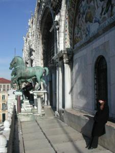
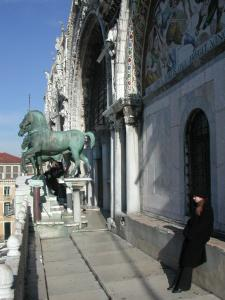
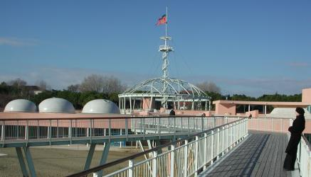

Venice

(January 13-23, 2004)
The Official Excuse ... er, Reason
I was presenting a paper at Principles of Programming Languages 2004, a programming language theory conference.

It's not too often that I get to go to a conference in such a place!
Here's the conference croud,
geeking away under centuries-old Italian frescoes
in the Auditorium Santa Margherita, Dorsoduro.


I stayed at Palazzo Zenobio,
an old Armenian palace near the auditorium.
Conference meals were also held here.
Wandering the City
  |

Picking our way through the twisty streets on a rainy day.
Well actually,
Anya's picking our way, and I'm following with the camera. :)

After my conference was over,
Anya and I stayed at a small (5-room?) hotel near Ospedale Civile,
on the northeast side of Venice,
from where you can see across the lagoon to Isola di San Michele.

Although the weather was usually quite calm and pleasant in the city,
one late night around high tide it got quite stormy around the edges
and started flooding the north-shore walkway near our hotel.

Look ma, no handrails! |


|

|

|

|
We saw so many, I've unfortunately lost track of exactly which was which.
Piazza San Marco
 

Basilica di San Macro, the main church.


Palazzo Ducale, the Doges' palace.

|
|

|
|
|

{kind=link}
{kind=link}
{kind=link}
{kind=link}
{kind=link}
{kind=link}
{kind=link}
{kind=link}
{kind=link}
{kind=link}
{kind=link}
{kind=link}
{kind=link}
{kind=link}
{kind=link}
{kind=link}
{kind=link}
{kind=link}
Castello
On Tuesday we explored Castello, the eastern end of the "big fish" of Venice, as well as Isola di San Pietro, where the original "main" church is located.

Italian pine trees at Giardini Biennale. |
Arsenale, the location of the old shipyards, where in Venice's heyday the shipbuilders could toss up a full-size ship in one day. |
{kind=link}
Lido
On Wednesday we took a boat out to the island of Lido, where the beaches are.

There are lots of sea shells on the beaches of Lido. |

LOTS and LOTS of shells. |
|  |

|
{kind=link}
|
Horsing around on some skeletal dock structures... |

Surprise! |
{kind=link}
The Grand Canal
A small gondola fleet out cruising the canal.
A singer was standing in the front of one of the boats
(second from right),
singing to the whole group.
{kind=link}
Looking across the Grand Canal at night from one of Anya's favorite hard-to-find spots...
|
Santa Maria della Salute |
San Giorgio Maggiore in the distance |
{kind=link}
{kind=link}

Looking out from the Rialto bridge...

...at the sunset over the Canal.